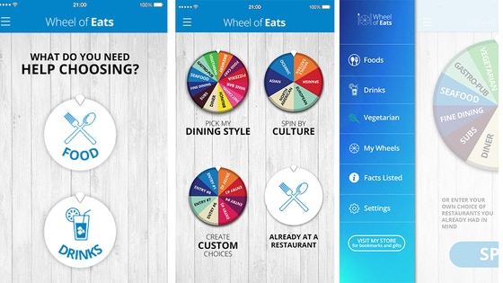

About: The idea is an ios app with a wheel that you spin. Whatever the wheel lands on is the suggested restaurant or type of food you should eat. The purpose is to make food decisions easier and pull people out of their comfort zones. We're also trying to educate non-foodies in the culinary world around them, or simply save many future disputes between couples that can't agree on what to eat lol.
